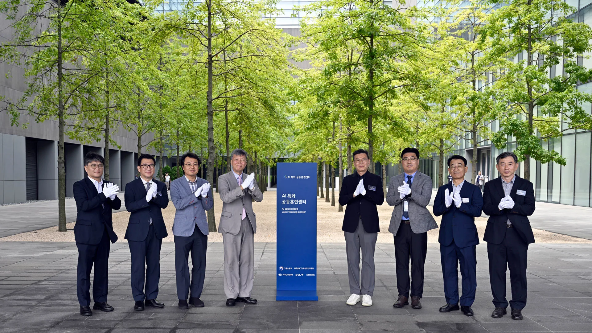
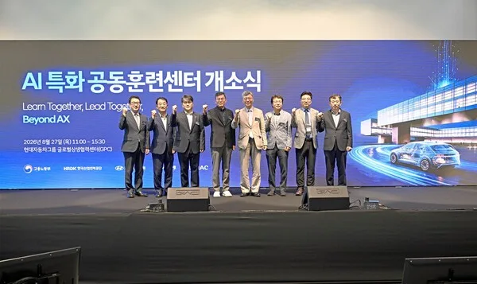
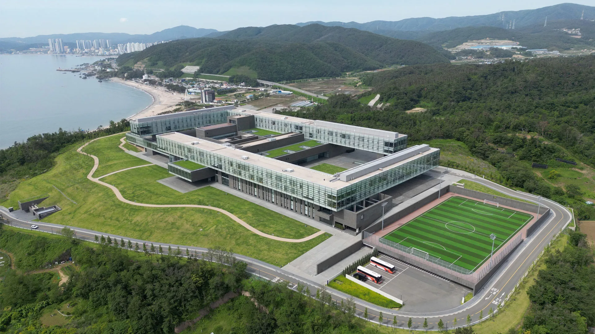
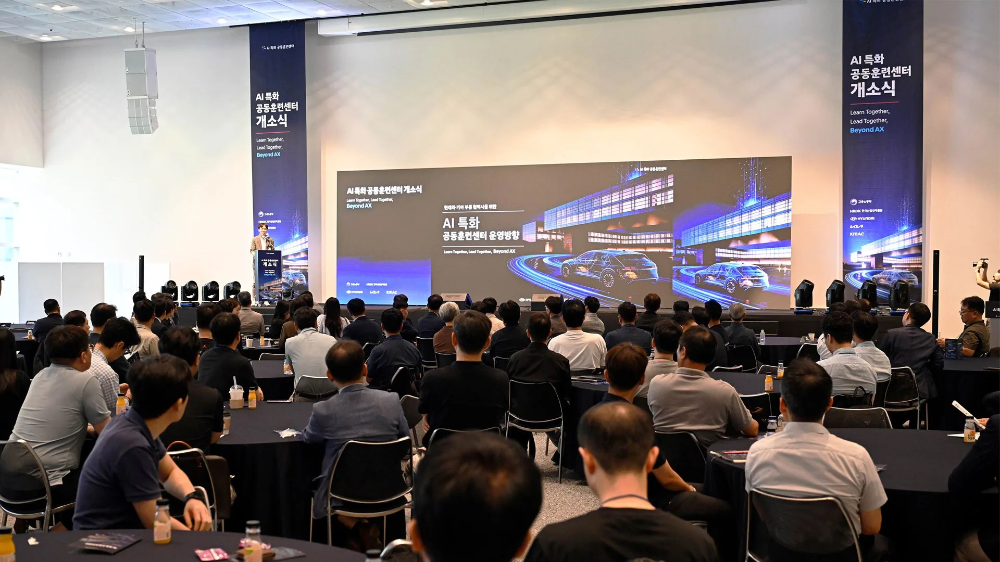

▲ 경북 경주 글로벌상생협력센터(GPC)에서 열린 'AI 특화 공동훈련센터' 현판식. 현대차·기아, 고용노동부, 한국산업인력공단, KMAC 관계자들이 참석했다
1. 경주 GPC에서 열린 'AI 특화 공동훈련센터' 개소식
현대차·기아가 2026년 8월 27일 경북 경주에 위치한 '현대차그룹 글로벌상생협력센터(GPC)'에서 부품 협력사를 위한 'AI 특화 공동훈련센터' 개소식을 열었다. 개소식에는 현대차·기아 구매전략사업부장 윤준호 상무, 머신러닝랩장 박근한 상무를 비롯해 한국산업인력공단 이병훈 이사장, KMAC 남상현 그룹장, 한국무브넥스 이현덕 대표이사 등 관계자와 주요 부품 협력사 임직원 약 250여 명이 참석했다. 행사장에는 'Learn Together, Lead Together, Beyond AX'라는 슬로건이 내걸렸다.

▲ 무대 위에서 진행된 개소식 기념촬영. 화면에는 'AI 특화 공동훈련센터 개소식 – Learn Together, Lead Together, Beyond AX' 문구가 띄워졌다 ⓒ 현대자동차그룹
GPC는 동해안을 마주한 경주시 양남면에 자리한 현대차그룹의 협력사 상생 전용 시설로, 통유리로 지어진 연구·교육 복합 건물과 축구장 등 부대시설을 갖추고 있다. 이번 훈련센터는 이 GPC 안에 새롭게 마련된 AI 특화 교육 공간이다.

▲ 동해안을 끼고 자리한 현대차그룹 글로벌상생협력센터(GPC) 항공 전경. 이번 AI 특화 공동훈련센터가 이곳에 신설됐다 ⓒ 현대자동차그룹
2. 900여 명 실무 교육… 무엇을 가르치나
훈련센터는 올해 1·2차에 걸쳐 부품 협력사 임직원 약 900명을 대상으로 AI 실무 교육을 진행한다. 교육 내용은 크게 세 갈래다. 첫째는 생성형 AI를 활용한 작업표준서·품질 문서 작성 자동화, 둘째는 AI 비전검사를 통한 품질 검사 및 불량 검출 자동화, 셋째는 공정 빅데이터 분석을 통한 품질 리스크 관리다. 단순 이론 교육이 아니라 자사 공장의 실제 불량 데이터를 활용한 문제해결학습(PBL) 방식으로 운영되며, 직무별 맞춤형 커리큘럼과 AX(AI Transformation) 문화 확산 활동도 병행한다.
| 항목 | 내용 |
|---|---|
| 개소일 | 2026년 8월 27일 |
| 위치 | 경북 경주 현대차그룹 글로벌상생협력센터(GPC) |
| 2026년 교육 인원 | 부품 협력사 임직원 약 900명(1·2차) |
| 핵심 교육 분야 | 생성형 AI 문서 자동화, AI 비전검사, 공정 빅데이터 분석 |
| 운영 방식 | 직무 맞춤형 교육 + 자사 불량 데이터 기반 PBL |
| 참여 기관 | 고용노동부, 한국산업인력공단, KMAC, 현대차·기아 |
📍 AX(AI Transformation)란
AX는 인공지능을 활용해 기업의 업무 방식과 생산 공정을 근본적으로 전환하는 과정을 뜻하는 용어다. 디지털 전환(DX)이 데이터·시스템의 디지털화에 방점을 뒀다면, AX는 여기서 한발 더 나아가 AI가 실제 의사결정과 공정 운영에 관여하는 단계를 지향한다. 완성차 업체뿐 아니라 부품 협력사까지 AX 역량을 갖춰야 공급망 전체의 경쟁력이 유지된다는 것이 업계의 공통된 진단이다.
3. 왜 지금 협력사 AI 교육인가 — SDV 전환의 압박
이번 훈련센터 개소의 배경에는 자동차 산업 전반의 구조적 전환이 자리한다. 전기차·소프트웨어 중심 자동차(SDV)·AI로 대표되는 산업 재편이 가속화되면서, 완성차 업체는 물론 부품 협력사들도 기존 내연기관 부품 제조 역량만으로는 생존을 장담하기 어려운 상황에 놓여 있다. 업계에서는 국내 자동차 산업의 SDV 전환 속도에 비해 소프트웨어·AI 전문인력 확보는 여전히 초기 단계에 머물러 있다는 지적이 꾸준히 제기돼 왔다. 전통적인 생산·정비 인력 구조가 소프트웨어 엔지니어·데이터 사이언티스트 중심으로 재편되는 흐름도 이런 위기감을 뒷받침한다.
현대차·기아는 이 같은 문제의식 아래 협력사 지원 정책을 다각도로 넓혀왔다. 대금 지급조건 개선과 상생결제시스템 활성화 같은 재무 지원에 더해, 교육·기술 지원을 통해 협력사의 SDV·전동화·자율주행 기술 전환을 함께 뒷받침하겠다는 것이 회사 측 설명이다.

▲ 개소식 현장에는 부품 협력사 임직원 약 250여 명이 참석해 AI 특화 공동훈련센터 운영방향 발표를 들었다 ⓒ 현대자동차그룹
4. 현대차그룹의 상생 프로그램, 어디까지 왔나
이번 훈련센터는 현대차그룹이 그동안 이어온 협력사 상생 프로그램의 연장선에 있다. GPC는 협력사 R&D 지원과 품질·기술 노하우 전수를 위해 조성된 시설로, 이미 다양한 실무 교육과 컨설팅이 이뤄져 왔다. 최근에는 현대모비스가 협력사와 함께 AI·로봇 기반 제조 혁신기술을 확대하는 등, 그룹 차원의 협력사 디지털 전환 지원이 여러 계열사로 확산되는 모습이다. 현대차·기아는 내년부터 AI 교육의 대상과 인원을 확대해, 품질 분야를 넘어 생산·연구개발(R&D)·구매·경영관리 등 전 직무로 넓혀갈 계획이라고 밝혔다.
업계에서는 국가 차원의 표준 역량체계 구축과 산업 문제 해결형 교육, 성과 기반 지원 체계 등이 뒷받침돼야 협력사 AI 전환이 실질적인 성과로 이어질 수 있다는 의견도 나온다. 관련 소식은 현대자동차그룹 뉴스룸에서 확인할 수 있다. 바로가기
✅ 현대차·기아 AI 특화 공동훈련센터, 이것만은 확인하세요
· 2026년 8월 27일 경북 경주 글로벌상생협력센터(GPC)에서 개소
· 올해 부품 협력사 임직원 약 900명(1·2차) 대상 실무 교육
· 생성형 AI 문서 자동화, AI 비전검사, 공정 빅데이터 분석이 핵심 커리큘럼
· 자사 불량 데이터 기반 PBL 방식, 직무별 맞춤형 교육 병행
· 내년부터 생산·R&D·구매·경영관리 등 전 직무로 대상 확대 예정
5. 정리
현대차·기아의 AI 특화 공동훈련센터는 완성차 업체 혼자만의 힘으로는 SDV·AI 전환을 완성할 수 없다는 인식에서 출발한다. 900여 명 규모로 시작하는 올해 교육은 시작점에 불과하며, 내년부터 전 직무로 확대될 예정인 만큼 협력사들의 실질적인 체질 개선으로 이어질지가 관건이다. 완성차와 부품 협력사가 함께 AI 역량을 끌어올려야 공급망 전체의 경쟁력이 유지된다는 점에서, 이번 훈련센터는 앞으로도 계속 관심 있게 지켜볼 만한 사례다.